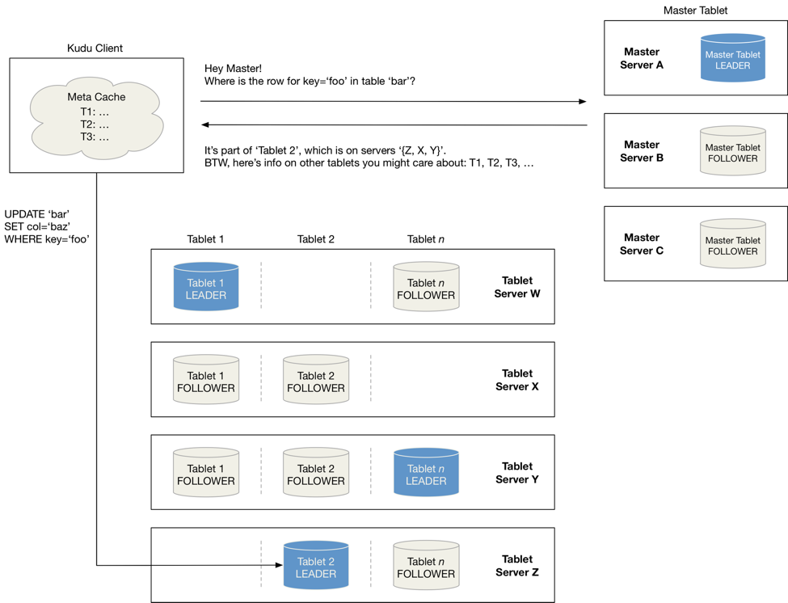
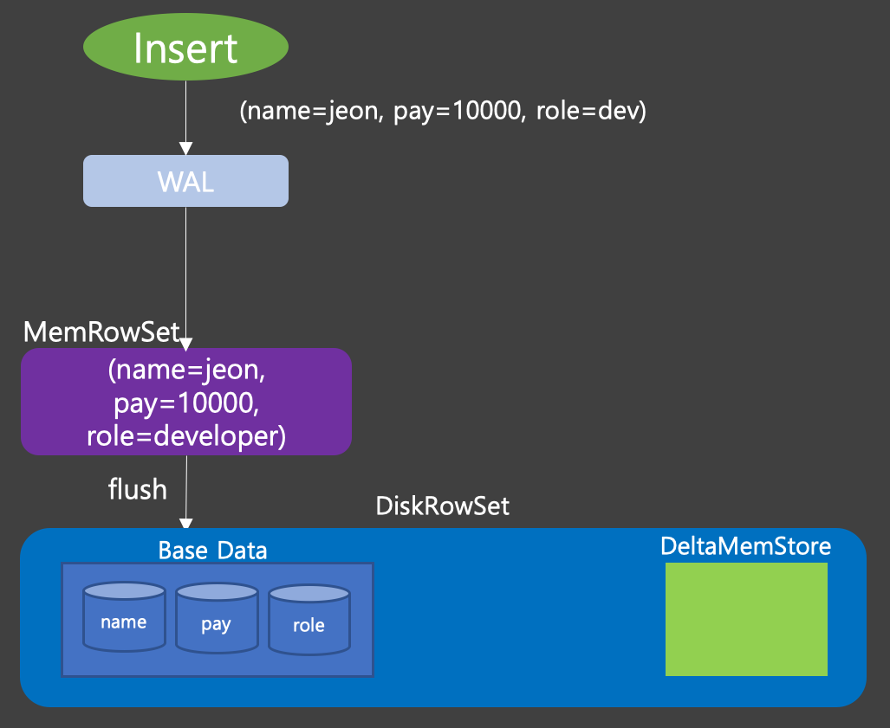
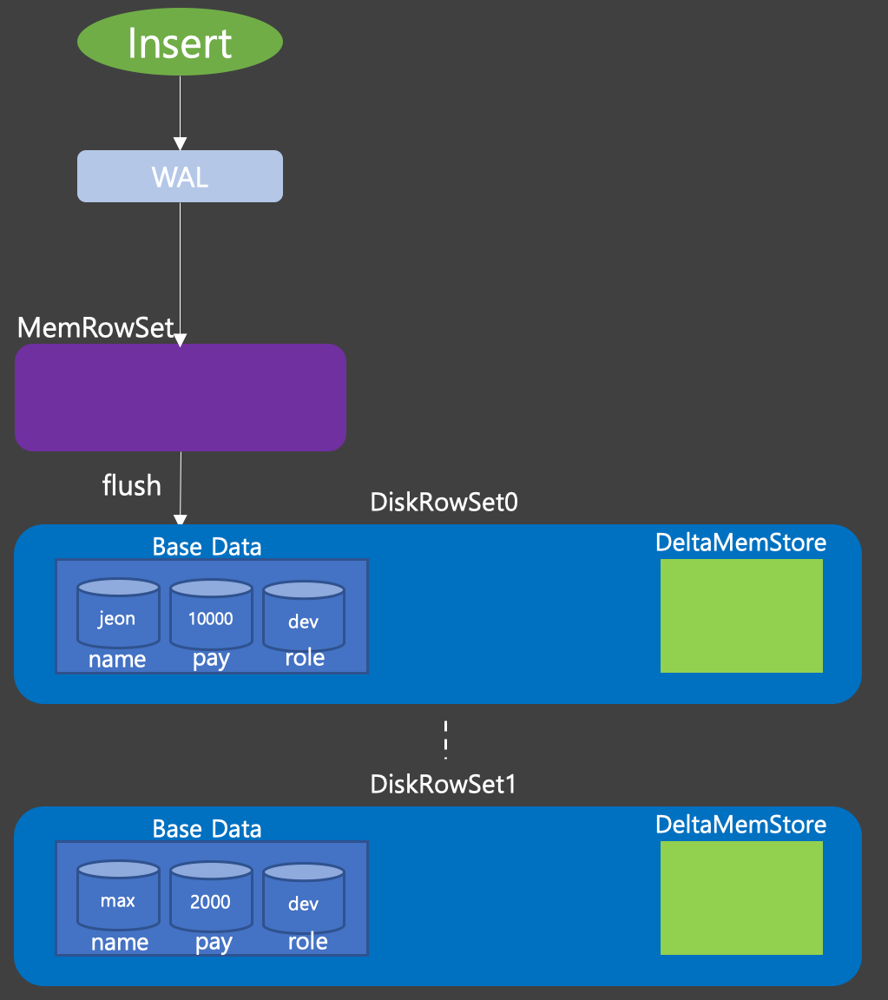
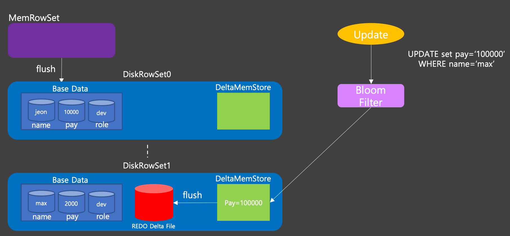
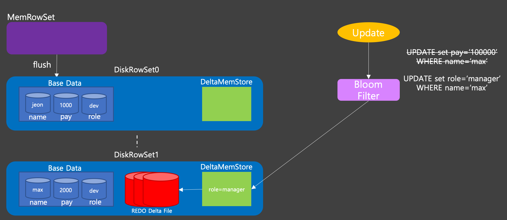
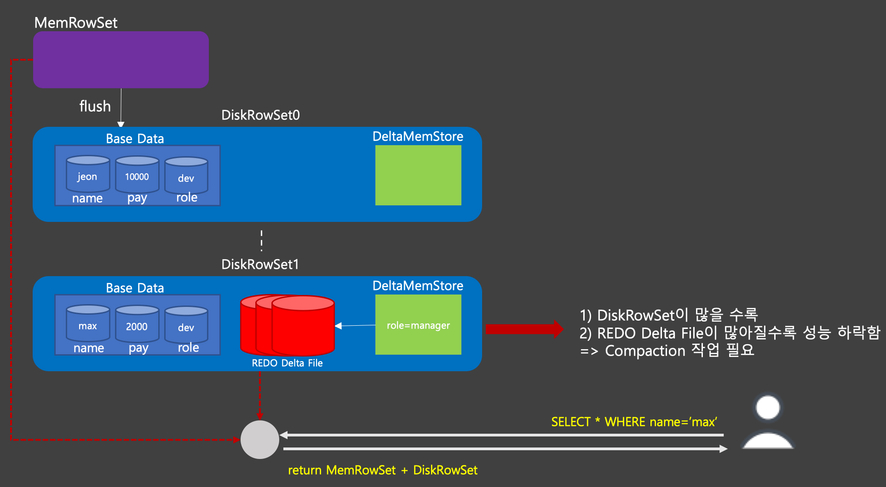
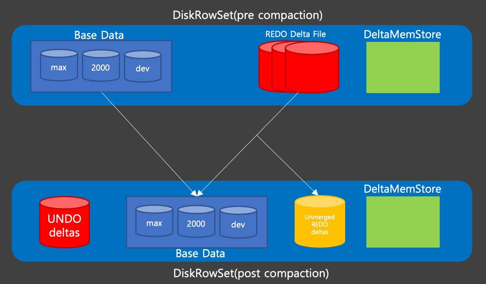

[Kudu] 2. Write And Compaction
본 포스팅은 아래의 출처의 정보들을 조합하여 나름의 구성을 진행하였다. 잘못 이해하고 있거나, 문제가 있는 부분이 있을수 있음을 사전에 명시하고 시작하도록 하겠다.
출처 및 참고자료
1. 태블릿 탐색

출처: https://blog.cloudera.com/apache-kudu-read-write-paths/
Kudu에서 데이터를 읽기 전 가장 먼저 해야할 일은 찾고자 하는 데이터가 어떤 태블릿 서버의 어떤 태블릿에 들어가있는지를 찾는 것이다.
위의 이미지에서 잘 표현되어있듯, 가장 먼저 클라이언트는 Master Leader에게 bar 테이블의 key='foo'를 요청한다.
이후 마스터 테이블은 Metadata를 찾아 해당 데이터가 있는 태블릿 정보를 돌려주게 된다. 이 정보를 바탕으로 태블릿에서 데이터를 가져온다.
이때 매번 읽기 작업을 할때마다 Master에서 메타데이터를 읽어오는 것이 아니라 한번 요쳥한 데이터는 로컬 매타 캐시에 저장하고, 필요할때마다 이 캐시에서 데이터를 가져온다.
이 캐시는 READ, WRITE 명령이 실패하면 갱신된다.
2. 쓰기 오퍼레이션
1) Insert Operation

Insert 요청이 들어오면 가장 먼서 WAL에 저장된다. 여러 NoSQL 서버에서 사용하는 방법이며 디스크에 플러시 되기전 문제가 발생하였을때 복구하기 위한 방법으로 사용된다.
WAL에 쓰고나면 MemRowSet이라고 불리우는 메모리 영역에 데이터를 쓴다. 이 부분에 쌓이게 되다 메모리가 가득차게 되면 디스크에 파일형태로 저장이 되는데 이것을 DiskRowSet 이라고 부른다. DiskRowSet은 Insert Operation을 통해 저장된 데이터인 Base Data와 Update Operation시에 사용할 메모리인 DeltaMemStore로 구성된다.

Insert Operation이 지속적으로 발생하여 MemRowSet이 계속 flush 되면 DiskRowSet은 계속하여 늘어나게 된다. 이는 나중에 언급할 DiskRowSet Compaction에 의해 적은수의 파일 형태로 합쳐진다.
2) Update Operation

Insert Operation이 MemRowSet이라 불리는 메모리 공간에 먼저 써지는것과 마찬가지로 Update Operation도 DiskRowSet이 가지고 있는 DeltaMemStore라는 메모리 공간에 업데이트 하고자하는 정보가 저장이 된다.
이때 어떤 DeltaMemStore에 Update 정보를 남겨야 하는지 찾아야 하는데, 이때 Bloom Filter를 이용하여 빠르게 DiskRowSet-DeltaMemStore를 찾는다.

지속적으로 Update Operation이 발생하면 DeltaMemStore에 쌓이고, 이는 MemRowSet과 동일하게 일정 크기만큼 커지면 REDO Delta File라고 불리우는 파일로 flush 된다. Update Operation이 많으면 많을 수록 flush도 자주되고, 이로 인해 REDO Delta File이 점점 더 많이 생성이 된다.
3) Compaction이 필요한 이유

Client가 특정 row에 대한 결과를 요청하면 Kudu는 MemRowSet + DiskRowSet의 결과를 찾아 Client에가 리턴해 주게 된다.
이때
- DiskRowSet이 너무 많음
- REDO Delta File이 너무 많음
과 같은 이유로 성능저하가 발생 될 수 있다. 그래서 이를 해결하기 위해 Compaction 작업을 진행하게 된다.
3. Compaction
위에 나열했던 것처럼 Compaction이 일어나는 부분은 DiskRowSet에 대한 Compaction과 REDO Delta File에 Compaction으로 나뉜다.
1) RowSet Compaction
여러개로 나뉘어져 있는 DiskRowSet들을 더 적은 수의 DiskRowSet으로 합치는 Compaction이다. 이렇게 DiskRowSet의 갯수가 줄어들면 쓰기 요청시 블룸필터에 의해 DiskRowSet을 찾는것이 빨라지기 때문에 쓰기 요청의 성능이 향상된다.
2) Delta Compaction
REDO Delta file을 줄이는 방법에는 두가지 Compaction이 존재한다.
- Minor Delta Compaction: Base Data는 유지한 상태로 REDO delta file만 병합하여 REDO Delta file의 수를 줄여 읽기 성능 향상을 한다.
- Major Delta Compaction: REDO Delta File 뿐만 아니라 Base Data도 함께 병합 하는 Compaction

- 특정 컬럼에 대해 상당한 량의 업데이트가 일어났을때, Base Data와 관련된 REDO delta file을 병합한다. 이때 모든 REDO Delta file이 Base Data와 병합되는것이 아니라 대량의 업데이트와 연관된 파일만 Base Data와 병합된다.
- 적은량의 업데이트가 발생하여 Base Data와 병합되어도 별 이득이 없는 경우 이는 그대로
Unmerged REDO deltas에 저장된다. - Major compaction이 진행되는동안 변경분은
UNDO deltas라는 곳에 저장한다.